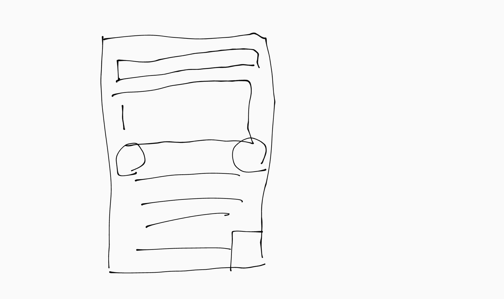
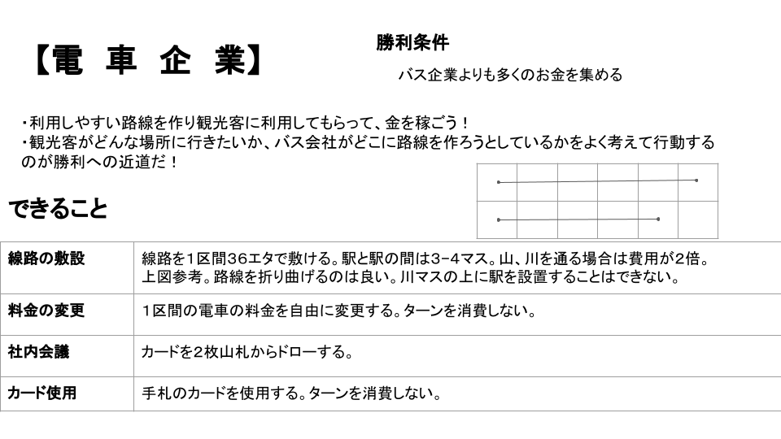

01 / LISTEN
当事者の不自由から始める
住民、生徒、利用者の声を起点に、数字だけでは見えない困りごとを具体化します。
Official Portfolio / Kitami, Hokkaido
まちづくり、公共交通、教育の現場に入り、当事者と一緒に課題を捉える。 体験型の仕組みづくりとデータ活用を通じて、参加した人が次の一歩を選べる状態をつくります。
Approach
課題を「知る」だけで終わらせず、参加者が自分ごととして考え、対話し、行動できる設計へ落とし込みます。
住民、生徒、利用者の声を起点に、数字だけでは見えない困りごとを具体化します。
ボードゲーム、ワークショップ、学習支援など、対話を生む体験として設計します。
現場で試し、参加者の反応とデータをもとに、次の版へ確実に更新します。
Track Record
& Achievements
受賞、地域実践、教育伴走、組織運営。すでに現場で実施し、検証を重ねてきた活動です。
札幌市主催の市民参加型まちづくりコンペティションにて最優秀賞を受賞。 市民・学生・行政の間にある情報や立場の隔たりを、対話を通じてつなぎ、 持続可能な都市・地域デザインとして提案しました。
2023–2024 / PUBLIC TRANSPORT INQUIRY
通学バスの減便、運賃の上昇、地方郊外で進む移動手段の縮小。 「通学や進路を、移動の事情で諦めなければならない状況」を変えたいという問題意識から、 公共交通とCO₂削減をテーマにしたシリアスボードゲームを独自開発しました。
選出・受賞：全国オンライン Summit 2023 選出 / SSAS 2024 Originality賞 / 北海道高校生持続可能コンテスト 優秀賞


| 領域 | 活動 | 実施内容・成果 |
|---|---|---|
| EDUCATION | 長期教育伴走指導 | 高校生の個別学習指導（数理・情報・英語）を長期伴走。全23回以上の板書アーカイブを残し、高校合格後も高校課程の自立学習を継続支援。 |
| EDUCATION | 発達支援・教育現場実践 | LITALICOワンダー、Minecraft CU、奈井江町サマーキャンプ、深川西高校の探究企画に参加。年齢や特性の異なる参加者が挑戦できる場を設計。 |
| COMMUNITY | さっぽろまちづくりワークショップ | 札幌市内の地域住民対話と、まちづくり協議会との共創に参加。地域の声を施策や活動につなげる対話の場を経験。 |
| DIVERSITY | 多文化共生プロジェクト「U too」 | 留学生と高校生をつなぐ交流プロジェクトを共同運営。助成金採択を受けて活動し、事業完了まで運営を担当。 |
| DX / EVENT | 帯広畜産大学祭 出店DX | 自作レジとAI購買データ分析を導入。時間帯別の値下げ戦略により、かき氷・うどんを完全完売。売上8万円・利益目標を達成。 |
| LEADERSHIP | 中学校 生徒会長「プロジェクトゼロ」 | 第74期生徒会長として学校改革プロジェクトを立案。生徒の意見を起点に、学校生活をより良くするための仕組みづくりを推進。 |
Upcoming Initiatives
& Vision
現在、企画・設計・検証を進めている取り組みです。実施済みの実績とは明確に区別して掲載しています。
学生パートナー（小樽商科大）とともに共同代表として構想中。大学生メンターによる「斜めの関係」とAIを組み合わせ、 不登校・通信制高校生が安心して人や社会とつながり、探究へ進めるサードプレイスを目指します。
過疎化、都市計画、地域資源といったテーマを、Minecraft上の謎解きと意思決定へ変換する教育ゲーム。 参加者が地域課題を自分の判断として考えられる体験を企画設計しています。
地方における高卒就職の一人一社制が生む構造的な選択肢の狭さに向き合う構想。 自治体・高校・地域企業との対話を通じ、探究学習と進路選択を接続するプラットフォームを検討しています。
Profile
北見工業大学で社会インフラと地域デザインを学びながら、札幌・道内各地で教育、まちづくり、イベント運営に取り組んでいます。
北海道札幌市出身。中学生時代は生徒会長として学校改革に取り組み、 高校では公共交通を題材にした探究活動とボードゲーム開発を実践しました。 現在は北見工業大学で社会インフラ工学を学び、地域課題を「対話」「体験」「実装」の三つから捉えています。
まちづくりでも教育でも、最初に大切にするのは、目の前の人が何に困り、 どんな選択肢を失いかけているかです。課題を説明するだけではなく、 参加者が自分の意思で考え、次の行動を選べる場をつくります。